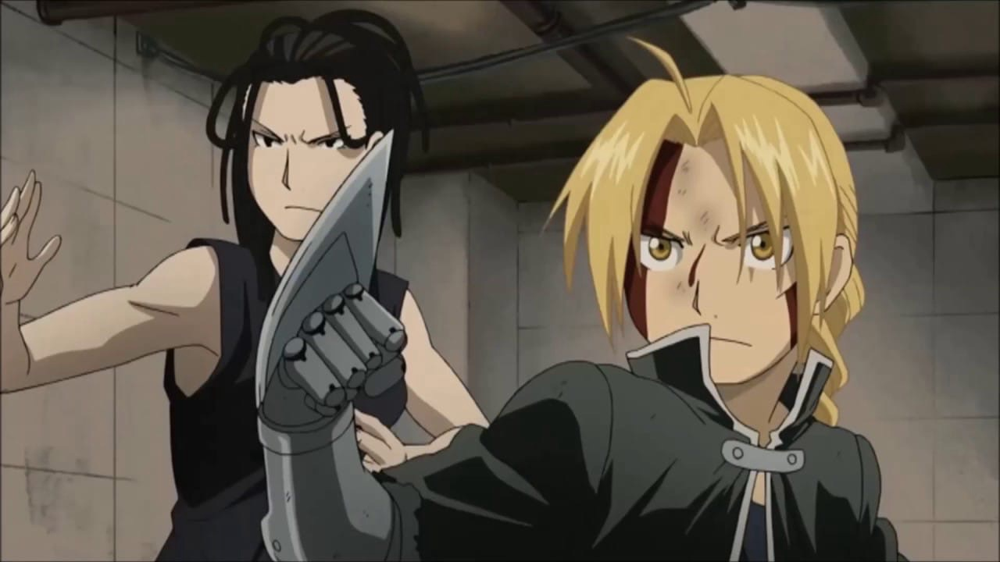
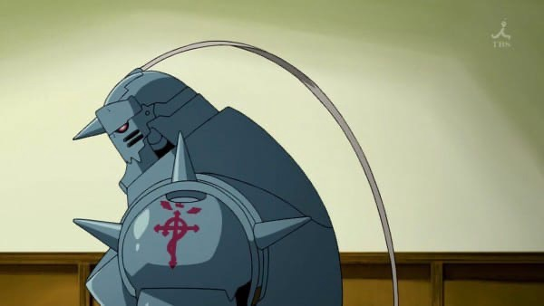
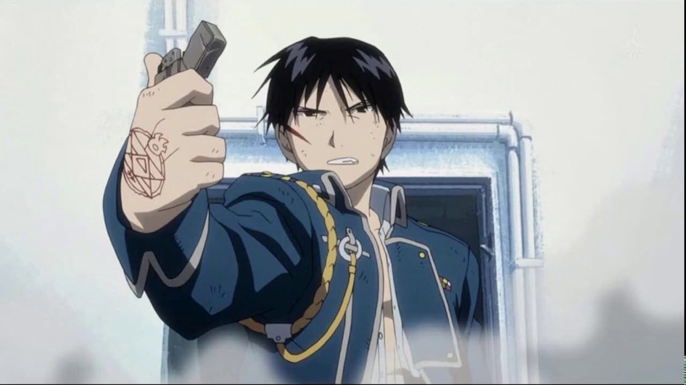
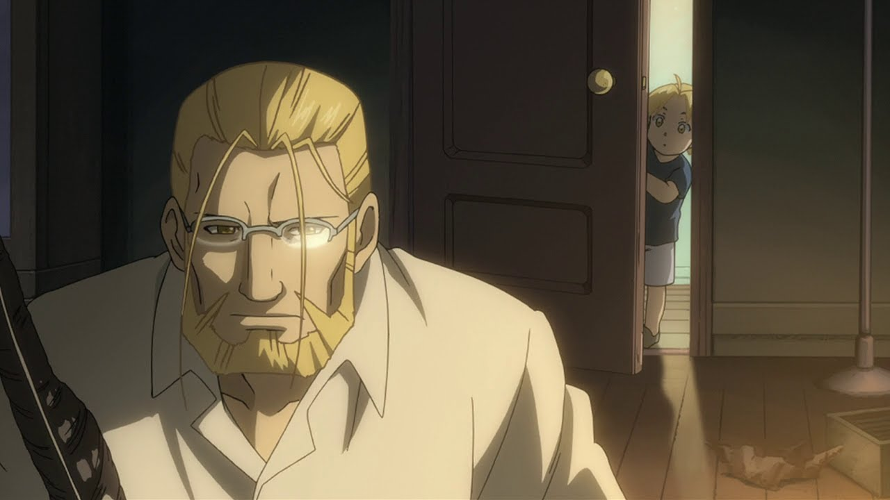

Главная способность, делающая Эдварда Элрика Эдвардом Элриком — это алхимия. Вследствие “знакомства” с Истиной ー один из немногих алхимиков, выполняющих преобразования без алхимического круга. Всё, что ему нужно сделать ー выстроить в голове формулу, которая в обычной трансмутации чертится внутри круга, и соединить вместе руки, собственно, и символизирующие алхимический круг. В большей части Эдвард использует алхимию для создания себе оружия в виде копья или же преобразования собственной автоброни в нечто похожее на клинок, а также для получения массивных сооружений разной функциональности. 
Несмотря на свои огромные железные габариты, Альфонс лучше владеет техникой рукопашного боя, чем Эдвард. За всё время Эд сумел только раз победить своего брата (и то забросив ему на шлем белую простыню), так что если в алхимии брат на порядок лучше него, то в рукопашном Ал уступает только своему учителю. Однако именно в рукопашном бою (впрочем, после и в алхимическом) Альфонсу приходится быть предельно осторожным, чтобы не повредить кровавую печать, поставленную братом - ведь именно она источник существования Ала в этом мире. Альфонс так же гениален, как и его брат, но он лучше Эдварда в социальных связях и общении, поэтому если нужно провести переговоры или кого-то убедить что-либо сделать - предоставьте всё Альфонсу. 
Огненная алхимия — результат исследований учителя Роя Мустанга, Бертольда Хоукая, который не пожелал передавать свои знания ученику, веря, что это самая опасная и смертоносная форма алхимии. Вместо этого Бертольд оставил записи в виде татуировки на спине своей дочери Ризы. На татуировке изображен круг с гексаграммой внутри, полученной при помощи треугольника воздуха и треугольника земли. В центре — треугольник огня, вершина которого направлена на изображение пламени. Под гексаграммой — изображение саламандры. Вне круга — два переплетающихся василиска и текст. 
Как человек-Философский камень, тело Ван Хоэнхайма обладает теми же способностями, что и гомункулы: регенерация, а также сохранение здоровья и силы на том же уровне, что и четыреста лет назад. Учитывая, что жизнь в течение почти четырех веков дала хороший жизненный опыт, а алхимические исследования — новые знания, уровень владения алхимией Ван Хоэнхайма легко затмевает любого другого алхимика мира. 